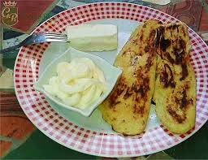

Galería



La Puerta del Diablo es un sitio turístico en El Salvador y muy hermoso, a lo cual para que disfutes mas de tu estadia en este hermoso lugar contamos con diveros puestos de comida donde te brindamos diferentes platillos deliciosos de El salvador.
nuestros almuerzos son variados para distintos gustos.
contamos tambien con sorbetes y minutas de procedencia natural que de seguro te gustaran.
Se encuentra en Panchimalco, San Salvador. Aquí puedes ver cómo llegar: